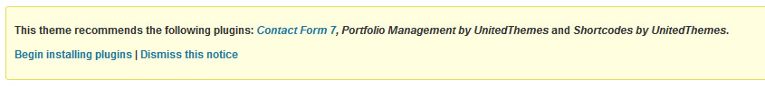
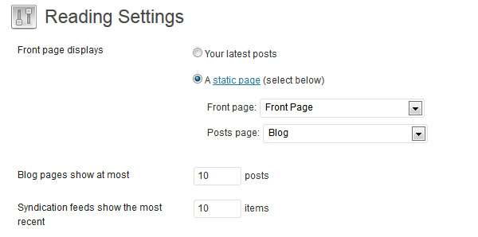
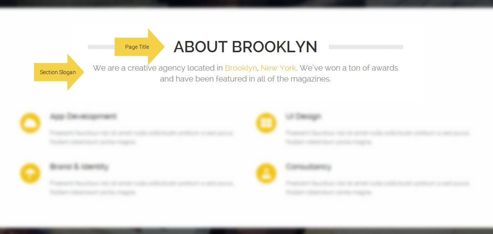
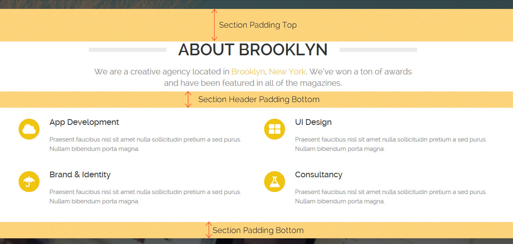
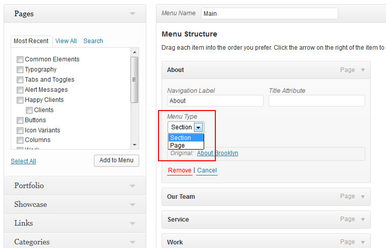

Thank you for purchasing our theme. We're as excited as you are about the possibilities before you. Finally, its going to be far less complicated to make your Wordpress website pages look and feel the way you want them. We built this theme for everyone. It is perfect for newcomers to creating a Wordpress site. Code is only poetry to people who know what it all means. To everyone else it is a strange and very foreign language. We get that and built everybody's requests right into the front end options. For all our seasoned Wordpress pros, we know how frustrating it can be trying to finish a client's project. We think you're about to discover you can go from start to finish faster than ever and produce a smashing looking site in far less time than you ever thought possible. Note: Be sure to refer to the information outlined in the following documentation for the Brooklyn theme while building your new site. We have explained much of what you need to know to create great looking pages easily using the features built into the theme with you in mind. If you cannot locate the answer here, sign up for our support forum. We do not answer support questions on Theme Forest neither via email.
Also take note of our online documentation. It provides further information about the theme, way more than covered by this documentation:
Before you attempt to upload your theme you must unzip the downloaded folder. Why? The extra files it contains can cause strange issues to occur in your theme's functionality. Only upload the inner zip folder and only install your theme through the Wordpress admin installer located under "Appearance" "Themes" "Install".
If this way to install the theme fails, we recommend to use FTP. Open your FTP client and move to your WordPress installation path. Drag & Drop the "theme" folder into the following path:
wp-content/themes/
Now go to your Dashboard Appearance Theme and activate the theme.
You will now recognize a message appearing at the top of the dashboard, advising you to install 3 recommended plugins. It's up to you if you like to install them, but as the name already says, we recommend to use these plugins since they are integrating theme features like shortcodes.
Learn more about hooks here : WordPress Hooks
| # | Hook | File | usage |
|---|---|---|---|
| 1 | ut_meta_hook | header.php | for use in hooking meta tags |
| 2 | ut_before_header_hook | header.php | for use in hooking before the header |
| 3 | ut_before_content_hook | header.php | for use in hooking before the main content |
| 4 | ut_before_footer_hook | footer.php | for use in hooking before the footer |
| 5 | ut_after_footer_hook | footer.php | for use in hooking after the footer |
| 6 | ut_java_footer_hook | footer.php | for use in hooking after the footer ( especially plain javascript without script tags!) |
After you have activated our theme you might recognize a message appearing at the top of your dashbaord.
We highly recommend to install these plugins. This theme definitely work without these plugins, but you will miss some nice features which make the theme experience perfect. Also recommend plugins are :
Since these two options are very basic we decided to move these settings to the theme customizer instead of the theme options panel. And it's way much more comfortable to see the accentcolor change within the live preview instead of switching browser tabs after each color change. Beneath the uncollapsed color picker you can find some nice color presets which you may already have recognized in our live demo. You can find the Customizer under Appearance Customize.
Start from Scratch ( recommended step )
If you like to use the one click demo installer, please skip this section and browse to the "Start with Demo Importer" section. Setting up the one page system is quite easy, if you follow these steps your individual one page will be ready in no time! After you have followed the theme installation instruction from above we can now start to set up the system.
Please go to "Pages" and add 2 new pages. The first page you need to create is your Front Page, so call it "Front Page" or something related. The Page title is only for internal use in this case. The second page you need to create is the blog page, name it "Blog" ( or your desired title ). Publish both pages. Now browse to Settings Reading and change the setting for Front page displays from Your latest posts into A static page. As you can imagine assign your previously created "Front Page" as the Front Page and your created "Blog" page as the Posts page.
Your Settings should now looks like this:

Now browse to Appearance Menus and create your main menu. Inside the "Manage Locations" tab you can assign this menu as the primary menu. You do not have to assign a page to this menu yet, we just want to make sure the menu has been set up correctly before we create our first page.
Now we can start to add our first section to our front page. Simply browse to Pages Add new . Beneath the WordPress Editor you will recognize a custom meta box called : Page & Section Setting. This set of option will help you to design the single section on the front page as well as particulary the page itself.
But what is a section? Let's take a look at our live demo front page, it's divided into different sections like "About us" or "Our Work" and each section is a page inside the system. And every page you are going to add to the menu, will appear as a section on the front page. If you like to add a page to the front page but you do not want to add it's own menu point, you just need to make this page as a child of an existing section page and the system will automatically add it to the front page. But this topic will be explained later on.
Lets start with the "Page Settings". This small set of options will affect the single page as well as the section on the front page. It has only a few options since most features are only available for the front page section. The next graphic will explain you the section header structure

Now we can start to configure the section itself, the set of options in this case is much bigger but you will see, each option can be useful and not each option is mandatory, you don't have to fill each option. The section management is dived into 5 different set of options. Section Settings, Color Settings, Parallax Settings, Overlay Settings and Misc Settings.
Section Settings
Not every Section needs a header, just hide it or simply turn it on. By default the section header is activated. Optionally you can also define an individual padding, which will reduce or enlarge the gap between header and the following content. If you leave this field empty, the default value of "50px" will be attached to the header automatically. Sometimes a section needs more or less padding top and padding bottom, by default each sections gets a padding top of 80px and a padding bottom of 40px. We have added the following grahpic to explain the padding behavior.

The "Section Width" option will define if the section itself will be a centered section or a fullwidth section. Basically the centered version which has a maximum width of 1200 pixel, and will be the best choice if you are going to present regular content, such as text or service boxes. The fullwidth section on the other hand is ideal for portfolios or google maps for example.
Color Settings
The theme already comes with a default colorset, but as you can imagine this set can't cover all combinations of dark , light or colored backgrounds. That's why we have added the custom color fields inside this setting section Note: Keep in mind that all settings inside this set of options are optional. Please insert only HEX colors if you are not using the colorpicker.
Parallax Settings
Within this option set you can activate or deactive the parallax effect for the uploaded background image. Regarding to the section width and height it might be necessary to play a bit with the dimension of the image you are going to upload, but a good default size to start with is 1600x900.
Overlay Settings
This overlay will we displayed behind the content but in front of the background image, depending on which color you choose and if you decide to activate the pattern, you can create simple but stunning image effects.
Misc Settings
In very few cases you may need to add some custom css. That's why we have added the custom class field. Inside this field you can insert your desired class ( or different classes by sepearting them with commas ) and these classes will be apllied to the outer div of the section.
Make the new page visible on the front page
After publishing the page you just need to assign this page to the main menu which you have created earlier. While adding the page to the menu, you can define if the new menu point will lead to a section or a page, means if you choose section it will create section on the front page and choosing page will just create a menu point which link to the single page.

Managing the contact section
Appearance since it will be display on all pages and posts.Start with Demo Importer
With version 2.2 of Brooklyn we have added the brand new wordpress demo importer. You can find the demo importer under "Appearance" -> "Demo Importer". It's an easy one click installer. Before you attempt to run this importer please make sure:
Brooklyn supports the following post formats:
Learn more about post formats : WordPress Post Formats
Setting up the portfolio is quite easy and it requires only a few steps to set it up. Of course you need to install the "UnitedThemes Portfolio" plugin in this case ( if you have not done it already ). Within the first step we recommend to create the portfolio categories first. This will make sure everything is right there when you need it. But what are portfolio categories? Let's take a look at the following example. Imagine you are a photographer and you have a wide range of images you like to show to the crowd. Inside your portfolio you have landscape and portrait images, than these both would be exactly your categories. Categories are mainly used for filtering your portfolio items later on.
Now you can start adding your first portfolio item. Go to Portfolio Add new. Basically there is not big difference to a regular blog post, all elements like featured image, post format and the WordPress Editor are in the same place. Currently the portfolio supports the following post formats:
And these portfolio posts formats are handeled exactly the same way as blog post formats, with one exception, you need to set a featured image for all kind of post formats. These images are used inside the portfolio overview.
After you have created your first portfolio items, we can now set up the portfolio overview. Please go to Portfolio Showcase and hit Add new. You will be redirected to a portfolio showcase configuration page. All Option are selfexplanatory, but we highly recommend to make active use of the image cropping if you are using high resolution pictures. After you have made all your settings, simply save the new showcase any copy the portfolio showcase shortcode from the upper right corner. You can now place this shortcode inside the WordPress Editor no matter if you are editing a post or page.
Brooklyn is fully translation ready.
To start the translation we recommend to use the following plugin Codestyling Localization to be installed in your Wordpress.
After activating the plugin go to:
Afterwards we recommend to use one of the following plugins to translate your page and posts.
Brooklyn is fully child theme compatible. We have attached a basic child theme to the download package which contains the minimum of required files. If you are planing any code customisations we highly recommend to do this inside the child theme! Learn more about child themes here
For minor CSS changes you can also make use of the Custom CSS field inside the Theme Options Panel. A very simple and mighty tool. The advantage of this technique is quite simple. If you are running a theme update this data is stored inside the database and does not gets overwritten with the next update!
If you need help, please do not hesitate to contact us! To grant best support we set up a support forum at Help Desk. Channeling all requests at one place keeps and makes it simple, easier and even more effective for every customers to get quick help. All issues, requests and questions can be discussed and answered at one place. Please note, you will only get access to our forums with a valid purchase key!
Each of our themes is a final version when offered for sale to you. If you've got some issues - we gladly help you out. Please Note! We cannot make radical changes without compensation.